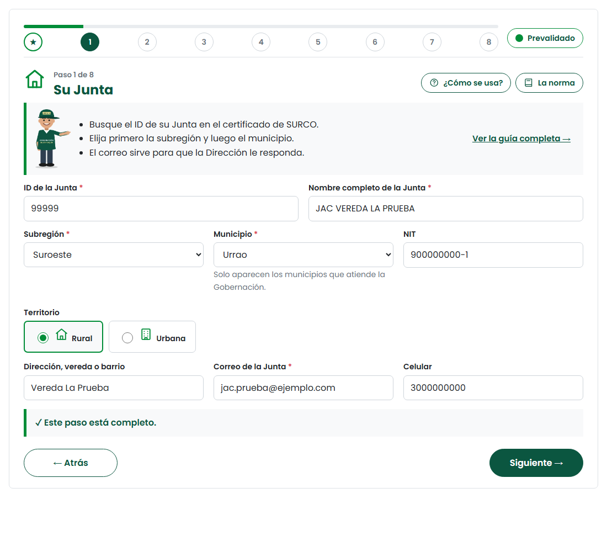
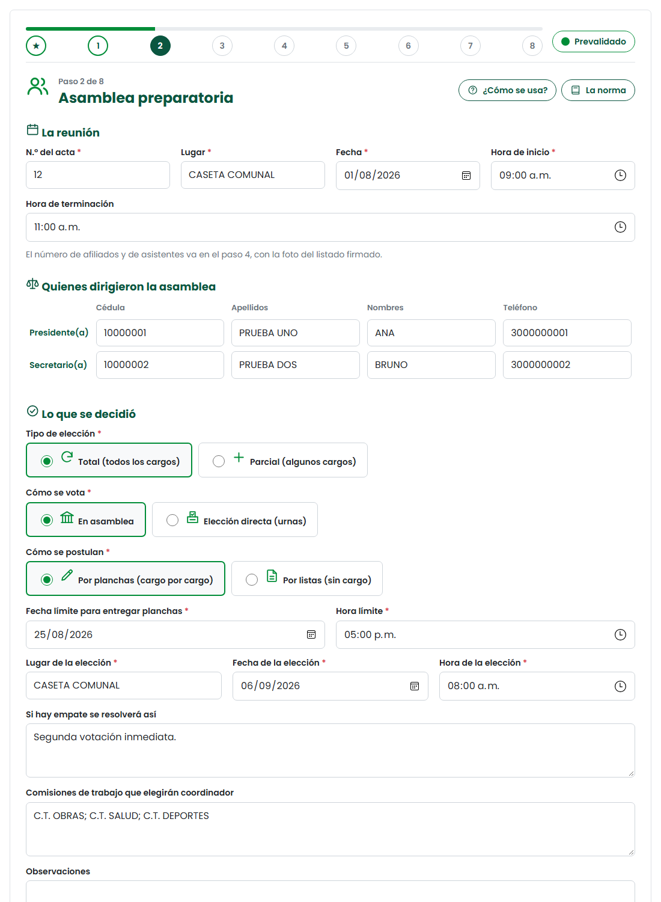
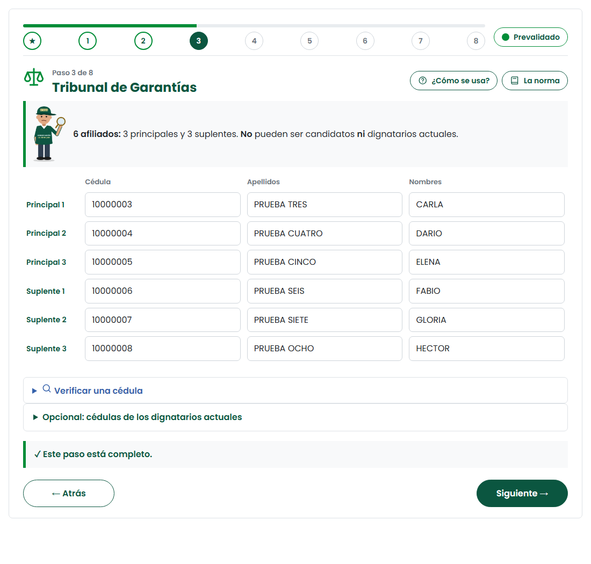
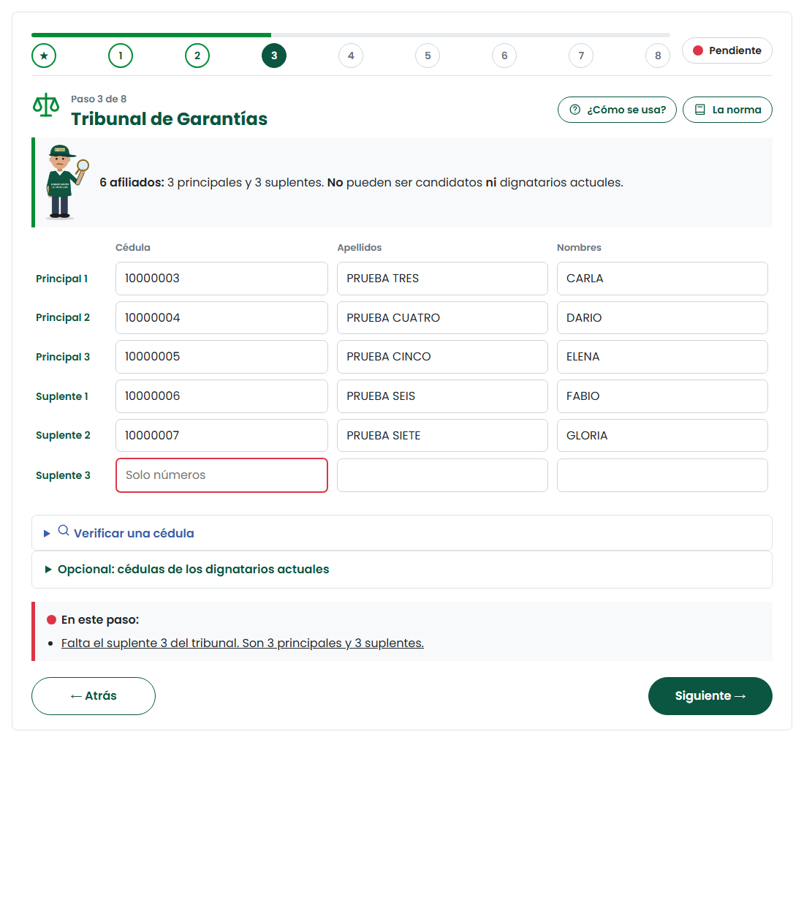
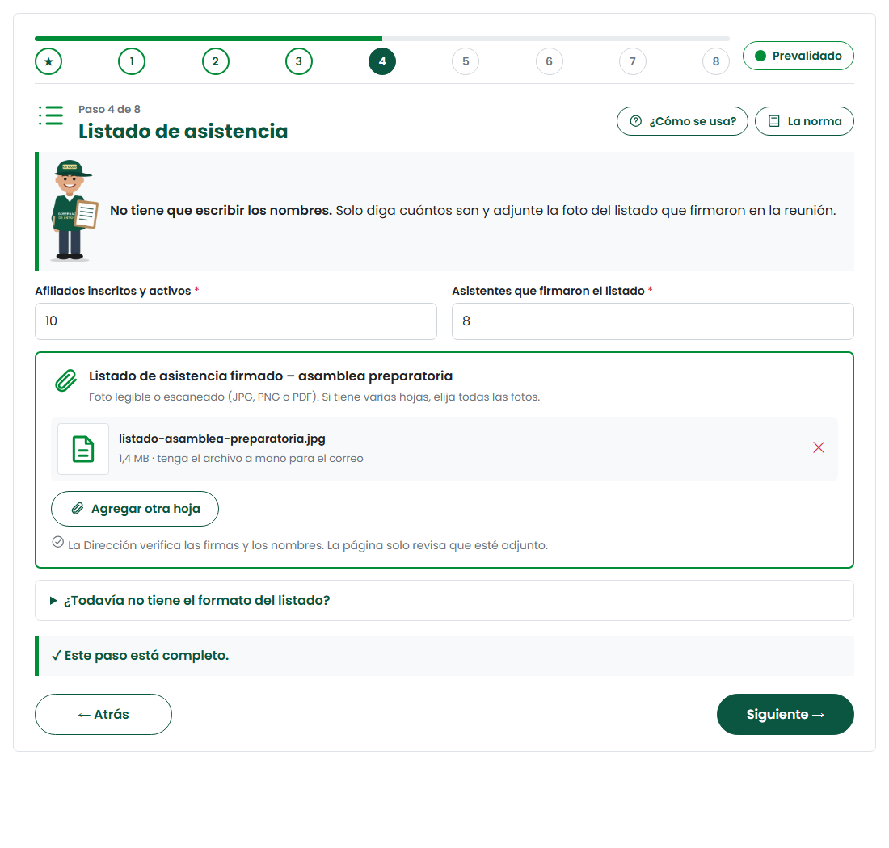

Paso 1 · Su Junta

- ID de la Junta (no es un número de la elección).
- Elija primero la subregión y luego el municipio. Solo aparecen los que atiende la Gobernación.
- El correo sirve para que la Dirección le responda.
¿No encuentra su municipio? Si es Medellín, Bello, Itagüí, Envigado, Sabaneta, Copacabana, Caldas o Rionegro, lo atiende su alcaldía.
Paso 2 · Asamblea preparatoria

- Datos del acta: número, lugar, fecha y hora.
- Quiénes dirigieron la asamblea (presidente y secretario).
- Lo que se decidió: tipo de elección, cómo se vota, planchas o listas, fecha límite, fecha de la elección y cómo se resuelven los empates.
Entre esta asamblea y la elección debe haber mínimo 30 días y máximo 3 meses. El cierre del libro de afiliados es 15 días antes de la elección.
La asamblea se convoca con 8 a 15 días calendario de anticipación. El libro de afiliados se cierra 15 días antes de la elección y lo custodia el Tribunal. Manual Comunal, p. 33 y 43
Paso 3 · Tribunal de Garantías

- Son 6 afiliados: 3 principales y 3 suplentes. Todos son obligatorios.
- No pueden ser candidatos ni dignatarios actuales.
- Cédula, apellidos y nombres de cada uno.
Es la causa número 1 de devoluciones. Revise que nadie del Tribunal esté en una plancha.
El Tribunal lo forman 6 afiliados: 3 titulares y 3 suplentes. Se designa mínimo 30 días calendario antes de la elección y actúa máximo 3 meses. Los suplentes reemplazan a quien falte. Ley 2166, art. 35 · Manual Comunal, p. 35
Así se ve un error

- El campo con el problema se pone en rojo.
- Abajo aparece «En este paso» con lo que falta, en palabras sencillas.
- Toque el mensaje y la página lo lleva al dato.
Paso 4 · Listado de asistencia

- Escriba cuántos afiliados tiene la Junta y cuántos asistieron. El semáforo revisa el quórum.
- Toque «Adjuntar listado firmado» y elija la foto o el escaneado. Si tiene varias hojas, elija todas.
- No tiene que escribir los nombres: la Dirección verifica el listado.
Descargue el listado de asistencia en blanco antes de la reunión: imprímalo y llévelo para que los asistentes firmen. Para la jornada de elección hay otro listado, que se adjunta en el paso 6.
✅ Antes de terminar
- El Tribunal tiene 6 personas y ninguna es candidata ni dignataria.
- Hay 30 días o más entre la asamblea y la elección.
- Adjunté la foto legible del listado firmado.